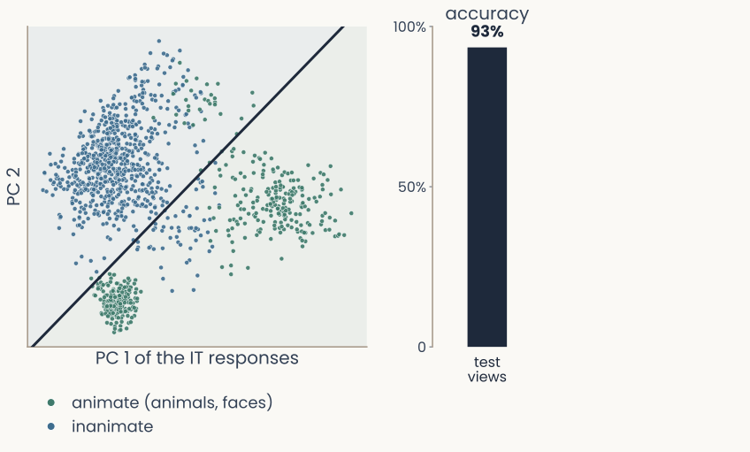
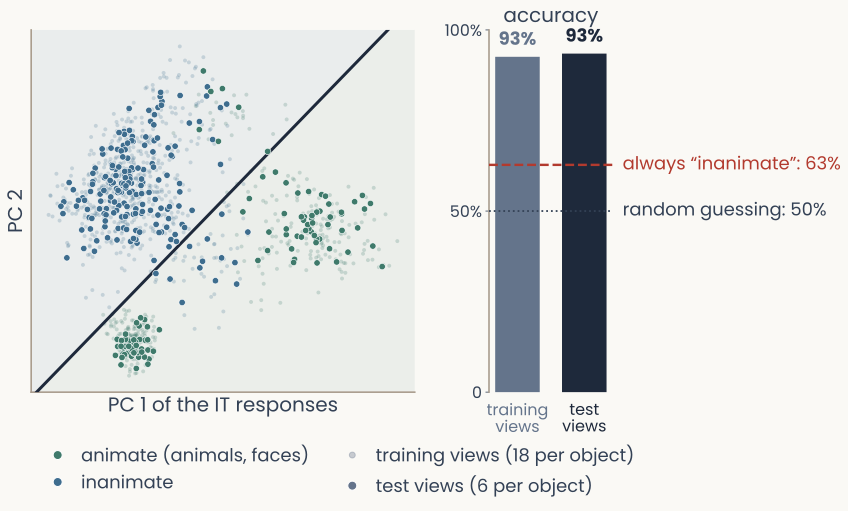
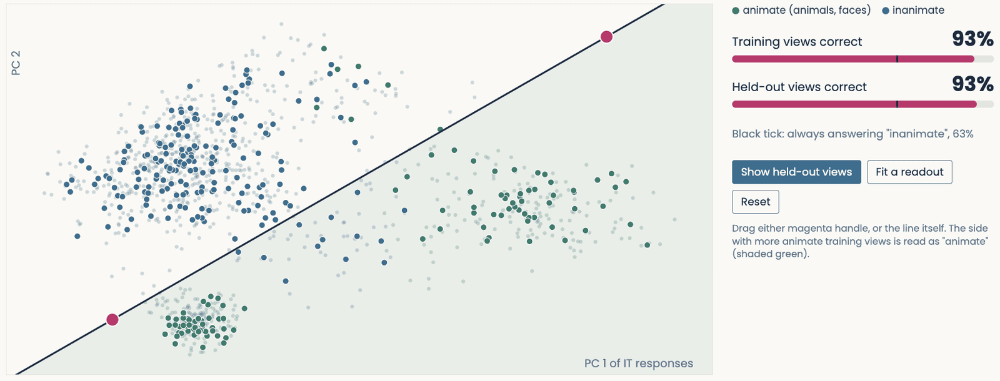
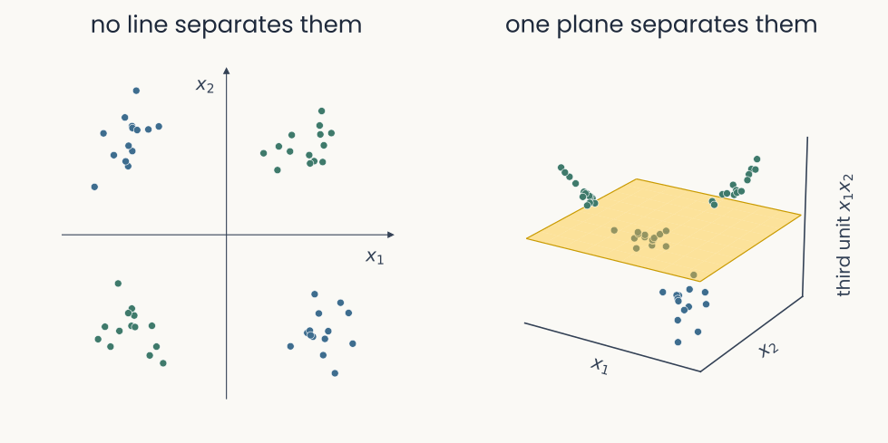
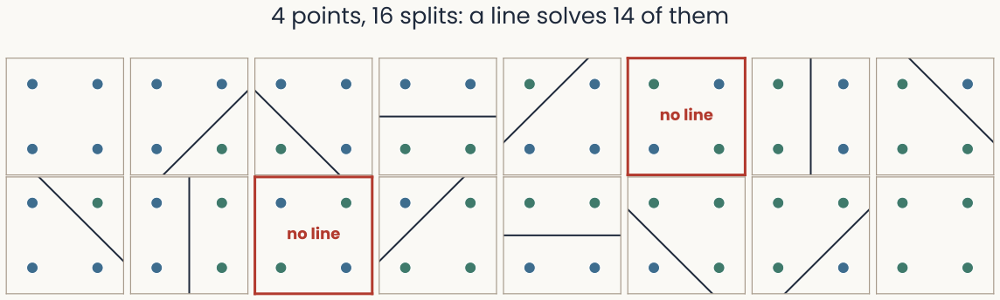

Geometry of neural representations
Reader-friendly version of the 48 lecture slides: the lecture content in normal flow, with figure descriptions and data tables where the figure carries data. Open the presentation.
Slide 1

Geometry of neural representations
Slide 2
Where we are
| Lecture | Takes in | Recovers | Why it matters |
|---|---|---|---|
| MDS | an RDM, e.g. people's similarity ratings | a map: the psychological space | a mental space measured from judgments alone |
| PCA | the response matrix (images × neurons) | the directions of largest variance, the principal components | how many directions hold most of the variance |
| t-SNE, UMAP, Isomap | the response matrix | a 2-D map that keeps neighbors on a curved shape (a manifold) | whether one object's views stay together |
Two inputs: an RDM (one number per pair of images) or a response matrix (one per image and neuron).
Slide 4
Today: two questions
- The data: the response matrix (images × neurons) of a population of neurons
- Two questions about a recorded population:
- How many dimensions does a population of neurons use?
- What can another neuron read from the responses?
- How: (1) count directions with PCA's eigenvalues, summed up by the participation ratio; (2) fit a linear readout, a boundary between groups of images, scored on new images
- Next lecture: do two representations agree, and when does a score mean anything?
Claims such as "V1 is high-dimensional" or "IT encodes animacy" rest on these computations.
Slide 5
How many dimensions does a population of neurons use?
Slide 6
Why count dimensions?
- Each image's response is one point in the neural state space: one axis per recorded neuron
- Hubel & Wiesel (course introduction): V1 neurons prefer different orientations at different positions. There are only so many orientations, so many neurons may repeat one another
- Mouse V1, ~10,000 neurons: how many independent directions do the responses use?
- GPT-2, 768 units of layer 7: how many directions do the days of the week use?
With heavy redundancy, the population uses far fewer dimensions than neurons recorded.
Slide 7
Three measures of dimension: GPT-2

Two panels from GPT-2-small, layer 7, projected on principal components 2 and 3, with a wide gap between them. Left, the representations of the seven days of the week form a ring of colored clusters in calendar order, Monday to Sunday. Right, the twelve months form a ring in calendar order, January to December
Open full-size figureReproduced from Engels et al. (2025), Fig. 1 (CC BY 4.0): GPT-2, layer 7
- Ambient 768 units · embedding 2: 90% of the variance fits in a plane · intrinsic 1
- t-SNE or UMAP on these responses would draw the ring: they estimate the manifold
- Each measure answers a different question, so none is the dimensionality (Perich 2026)
Slide 9
Rank: how many directions the points span
The same three panels with one stimulus moved off the plane: its value for neuron 3 no longer equals the sum of neurons 1 and 2, the point sits off the gold plane in the 3-D view, and the third principal component now has a small nonzero bar
Open full-size figure
Toy data, computed
- Rank = number of directions with nonzero variance = number of principal components (PCA) with nonzero variance. Neuron 3 = neuron 1 + neuron 2, so here rank 2: a plane
- One stimulus off the plane: rank 3. Noise does this to every real recording (480 IT neurons: rank 480). So we look at how the variance spreads
Slide 10
From the PCA lecture: the scree plot

The scree plot from the PCA lecture for the 400 Olivetti faces: the variance fraction of the first 30 principal components falls steeply over the first few and then flattens, an elbow
Open full-size figureFrom the PCA lecture: 400 Olivetti faces
- Variance fraction , largest first. An elbow = a natural place to stop
Slide 11
Mouse V1: variance fraction per component

Two panels for mouse V1 responses to 2,800 natural images, averaged over seven sessions. Left: bars of the variance fraction of the first 30 principal components, falling slowly from about 0.035 to about 0.006 with no elbow. Right: cumulative variance fraction against components retained, on a log axis out to 2,366; a dashed line at 0.9 is crossed at K = 744
Open full-size figureComputed from Stringer et al.'s data: two-photon calcium imaging, ~10,000 neurons, 2,800 natural images, 7 sessions
- Cross-validated PCA: each image was shown twice; directions come from the first showing, variance from agreement with the second, so noise averages out
- No elbow: 90% of the variance needs 744 components
Slide 12
On log-log axes, a straight line

Log-log plot of variance fraction against principal component k from 1 to 1,000 for mouse V1, seven thin lines for the recording sessions and one thick line for their mean, falling along a nearly straight line close to a dotted guide of slope minus 1; the legend gives alpha = 1.06
Open full-size figureComputed from Stringer et al.'s data
- Log-log axes: each tick is ×10, so a power law is a line of slope
- Mouse V1: straight over the measured range, (dotted: slope )
Slide 13
No elbow: what it means
The log-log plot of variance fraction against principal component k for mouse V1 (2,800 images, alpha 1.06), a nearly straight line with no bend, beside a dotted guide of slope minus 1
Open full-size figureComputed from Stringer et al.'s data
- With an elbow, a few directions carry most of the variance: the embedding dimension is clear
- Without one, the embedding dimension depends on the threshold (90%? 95%?)
- V1 is high-dimensional, but not uniformly. We want one number with no threshold
- Why V1 has no elbow, and what it may mean for fooling deep networks, is in the Going further block at the end
Slide 14
One number: the participation ratio
- The participation ratio of the eigenvalues (variances along the principal components):
- PR = 1 when one direction carries all the variance; PR = when all share it equally
- It needs no threshold. Report to compare populations of different sizes
The participation ratio counts how many directions the responses use: if k directions share the variance equally, PR = k. (minute paper)
Slide 15
Participation ratio, four populations
![Log-log plot of variance fraction against principal component k for four populations of 512 units on 1,854 stimuli. 512 units that each mix the same five hidden signals: the first five components hold almost all the variance, PR about 5. Independent signals of equal variance: a nearly flat line, PR about 401. Independent signals of unequal variances: a line that falls steeply, PR about 32, although no unit is redundant. ResNet-18's last layer on 1,854 THINGS images: a line that falls steadily, PR 99](../images/L05/36_pr_examples.svg)
Log-log plot of variance fraction against principal component k for four populations of 512 units on 1,854 stimuli. 512 units that each mix the same five hidden signals: the first five components hold almost all the variance, PR about 5. Independent signals of equal variance: a nearly flat line, PR about 401. Independent signals of unequal variances: a line that falls steeply, PR about 32, although no unit is redundant. ResNet-18's last layer on 1,854 THINGS images: a line that falls steadily, PR 99
Open full-size figureSimulated: 512 units, 1,854 stimuli, Gaussian signals + noise
- 5 hidden signals, each unit a different mix: units correlated, rank ≈ 5, PR ≈ 5
- 512 independent signals, one per unit, equal size: variance everywhere, PR ≈ 401
- Same, but unequal sizes: the strongest few dominate, PR ≈ 32. ResNet-18: 99
- PR counts how evenly the variance is spread, not how much information there is
Slide 16
Scale matters: z-score or not
- The eigenvalues are variances, so a unit measured on a large scale dominates them, and the participation ratio with them
- z-score each unit (subtract its mean, divide by its standard deviation) when scales are arbitrary: fMRI voxels, calcium fluorescence. Keep the raw scale when sizes matter: spikes/s
- ResNet-18 on THINGS: PR 99 raw, 107 z-scored. Report which you used
Slide 17
What can another neuron read from the responses?
Slide 18
What could another neuron use?

In pixel space the sheets of face images of two different people are interleaved, and a flat separating plane drawn through them fails to split them
Open full-size figureRedrawn in the last lecture from DiCarlo & Cox (2007)
- In pixels, two people's face images interleave: no flat (linear) plane separates them
- "IT encodes animacy" is a claim about information another neuron could use
- The simplest such neuron: a weighted sum and a threshold, a linear readout
Slide 20
A linear readout draws a hyperplane

A 2-D plane with axes x1 and x2 holding two groups of dots, green "yes" points upper right and blue "no" points lower left. A fitted straight line runs between them and the two sides are lightly shaded. A magenta arrow labelled w starts on the line at a right angle and points into the green side. A dotted segment from a far point to the line is labelled distance
Open full-size figureToy data, computed
- Response vector , weights , bias : the readout answers "yes" when
- , the dot product from the MDS lecture: one weight per unit
- The boundary : a line in 2-D, a plane in 3-D, a hyperplane in dimensions
- is perpendicular to it. Each point has a distance to the boundary
Slide 21
Monkey IT: reading animacy

Monkey IT responses to the 1,224 Bao object images on their first two principal components. Green dots are animate images (animals and faces), blue dots inanimate ones. A straight tilted line fitted to the points separates most animate images from inanimate ones
Open full-size figure
Computed: monkey IT, 480 neurons, 2 principal components
- Bao objects: 51 objects × 24 views, recorded in monkey IT, 480 neurons
- Axes: IT's first two principal components. Green: animals and faces; blue: inanimate
- Neither component alone separates them: the best boundary is tilted, a weighted sum of both
- IT separates animate from inanimate objects (Kriegeskorte et al., 2008)
Slide 24
Measuring with a readout

Monkey IT responses to the 1,224 Bao object images on their first two principal components. Faint dots are the 18 training views per object used to fit the line; solid dots are the 6 test views per object, held out, on which the line is scored
Open full-size figure
Computed: monkey IT, 480 neurons, 2 principal components
- Result: the readout reads animacy correctly for 93% of the views. Is that a lot?
- Baseline: guessing, 50%; always "inanimate", 63%: the majority-class baseline
- Split: fit on 18 of each object's 24 views (training set); score on the other 6 (test set). Both 93%: the readout did not overfit
Slide 25
Draw the boundary yourself

The readout demo with the fitted line: the share of training views and of test views classified correctly, against the majority-class baseline
Open full-size figure
- Each point has a distance to the boundary; points near it flip when the boundary moves
Slide 28
Linearly separable, or not

Toy data, two panels side by side at the same size. Left, the XOR clusters in the plane of x1 and x2. Right, the same clusters lifted by a third unit x1 times x2: the green clusters rise above a translucent plane and the blue ones drop below it, so one plane separates them
Open full-size figure
Toy data, computed: inputs coded −1 and +1
- Two classes are linearly separable when one hyperplane puts them on opposite sides
- XOR: green when both inputs have the same sign. No boundary works: 75% at best
- A third unit lifts the points into 3-D: one plane separates them
Slide 30
Shattering: tasks one boundary can solve

Sixteen small panels, one for each way to color four points at the corners of a square green or blue. In fourteen panels a straight boundary separates the green points from the blue ones and is drawn; the two panels in which opposite corners share a color are outlined in red
Open full-size figure
Toy data, computed: all 16 labelings
- A two-class task splits stimuli in two: tasks. Four points: 16, and a boundary solves 14
- Outlined: no boundary works. In dimensions, spread-out points split every way
- Shattering accuracy, a property of a population's responses to a stimulus set: split the stimuli at random (cat, car, cup vs dog, tree, shoe), fit a readout per split, average its test accuracy
Slide 33
One boundary for objects never seen: CCGP
![Left, schematic: eight conditions near the corners of a cube with one variable's coding direction drawn as parallel edges, and beside it a compromise geometry, a cube whose corners are pushed slightly apart in extra dimensions. Right, redrawn from Bernardi et al.: for monkey hippocampus, prefrontal cortex and anterior cingulate cortex, shattering accuracy of 0.70 to 0.75 as bars above a random-guessing band near 0.5, and CCGP for context, value and previous action as dots, above baseline except action in the hippocampus](../images/L05/58_ccgp_intuition_3.svg)
Left, schematic: eight conditions near the corners of a cube with one variable's coding direction drawn as parallel edges, and beside it a compromise geometry, a cube whose corners are pushed slightly apart in extra dimensions. Right, redrawn from Bernardi et al.: for monkey hippocampus, prefrontal cortex and anterior cingulate cortex, shattering accuracy of 0.70 to 0.75 as bars above a random-guessing band near 0.5, and CCGP for context, value and previous action as dots, above baseline except action in the hippocampus
Open full-size figureRight: Bernardi et al. (2020), CCGP approximate
- Shattering: any grouping of the same stimuli. CCGP: does "animate or not" learned on dogs and chairs work on cats and tables?
- Weights fixed, tested on new objects: high = general, low = specific
- Random scatter gives CCGP near baseline; one consistent direction gives high CCGP
Slide 34
Bernardi et al. (2020): what the monkeys did
Left, schematic: eight conditions near the corners of a cube with one variable's coding direction drawn as parallel edges, and beside it a compromise geometry, a cube whose corners are pushed slightly apart in extra dimensions. Right, redrawn from Bernardi et al.: for monkey hippocampus, prefrontal cortex and anterior cingulate cortex, shattering accuracy of 0.70 to 0.75 as bars above a random-guessing band near 0.5, and CCGP for context, value and previous action as dots, above baseline except action in the hippocampus
Open full-size figureRight: Bernardi et al. (2020), CCGP approximate
- Four images; which earn reward flips between two hidden contexts. 8 conditions: context × value × action
- A perfect cube: every variable transfers (high CCGP) but odd groupings fail (low shattering)
- Measured: near the cube. Both high: abstract and flexible
- Hippocampus: context transfers; last action does not
Slide 35
Recap
| Measure | The question it answers | Compared with |
|---|---|---|
| Participation ratio | How many directions carry the variance, with no threshold? | the number of units, as |
| Readout accuracy | Can a weighted sum and a threshold read a variable from new views? | majority-class baseline |
| Shattering accuracy | How well does one boundary solve an arbitrary two-class task, on average? | guessing, 0.5 |
| CCGP | Does one boundary transfer to objects never seen? | majority-class baseline |
Next lecture: comparing two representations.
Slide 36
Going further: what does the power law mean?
Slide 37
Monkey V1 falls the same way

The same log-log plot with monkey V1 added: two green lines, one per monkey, for principal components 1 to 60, starting higher and falling a little more steeply than the mouse line, with alpha 1.32 and 1.39
Open full-size figureComputed from Stringer et al.'s and Papale et al.'s data
- Log-log axes: each tick is ×10, so a power law is a line of slope
- Mouse V1: straight over the measured range, (dotted: slope )
- Monkey V1, electrode arrays, 100 THINGS images: a little steeper, and
Slide 38
Pixels fall the same way
The same log-log plot with a red line added for the pixels of the 2,800 images the mice saw: it falls almost exactly on top of the mouse V1 line, alpha 1.09
Open full-size figure
Computed from Stringer et al.'s and Papale et al.'s data
- Log-log axes: each tick is ×10, so a power law is a line of slope
- Mouse V1: straight over the measured range, (dotted: slope )
- Monkey V1, electrode arrays, 100 THINGS images: a little steeper, and
- Pixels of the 2,800 images: , the same slope. Is V1 just copying the images?
Slide 39
Neurons are not pixels

Log-log plot of variance fraction against principal component k for natural and whitened images. For natural images the pixel spectrum, alpha 1.09, and the mouse V1 spectrum, alpha 1.06, lie almost on top of each other. For whitened images the pixel spectrum is much flatter, alpha 0.41, while the mouse V1 spectrum still follows the dotted line of slope minus 1, alpha 1.09
Open full-size figureStringer et al.'s data: 7 natural, 4 whitened sessions
- Whitened images: all scales, equal contrast
- Their pixels flatten: from 1.09 to 0.41. Mouse V1 does not: 1.06 to 1.09
- V1's power law is not inherited from the images
- It is a property of how V1 encodes images (why a slope near 1 matters: two slides on)
Slide 40
A power law across species and methods

Log-log plot of variance fraction against principal component k from 1 to 60 for the same 100 THINGS images in monkey V1, V4 and IT (electrodes) and human visual cortex (fMRI), all with the same cross-validated estimator. All four fall along nearly parallel straight lines, with alpha 1.35, 1.25, 1.24 and 1.49
Open full-size figureComputed here: one estimator, 100 THINGS images
- Variance falls as a power law: mouse V1; monkey V1, V4, IT; human cortex
- Calcium imaging, electrodes, fMRI: same shape; the exponent depends on the estimator
- Shepard's law of generalization (MDS lecture) was such a law for behavior
- A candidate law of neural coding
Slide 41
Why a slope near 1? A smooth code
Log-log plot of variance fraction against principal component k from 1 to 1,000 for mouse V1 responses to 2,800 natural images: seven thin lines for the recording sessions and one thick line for their mean, falling along a nearly straight line close to a dotted guide of slope minus 1; alpha 1.06
Open full-size figureComputed from Stringer et al.'s data
- Smooth code: similar images give similar responses, as small changes should
- Slower than : fine directions dominate; near-identical images land far apart
- Stringer et al.'s theory: a slope near is about the flattest a smooth code allows. V1 uses as many dimensions as smoothness permits
- Why that matters: networks are not smooth
Slide 42
Deep networks are fooled by invisible changes

Three images in a row. Left, a public-domain photograph of an alligator lying on grass, which ImageNet-trained ResNet-18 labels alligator with 99 percent probability. Middle, the change added to it, magnified 50 times: colored noise; no pixel moves by more than 2 of 255 intensity levels. Right, the photograph plus the change, which looks identical to the original, labeled ostrich with 100 percent probability
Open full-size figureComputed here: ResNet-18 trained on ImageNet, a public-domain THINGS photograph
- Adversarial attack: a change of ≤ 2 of 255 levels per pixel flips the network's answer; we still see the same alligator in both photographs
- It matters for cars, medical imaging and face recognition, and no defense removes the problem
Slide 43
Could a V1-like spectrum make networks robust?

Log-log plot of the variance fraction of each principal component against its number k, for six networks' last layers on 1,854 THINGS images, with a dotted line of slope minus 1. Five trained networks fall more gently than the dotted line, with exponents between 0.67 and 0.96; the untrained ResNet-18, dashed, falls more steeply, exponent 1.43
Open full-size figure- Six networks, computed here: trained ones are flatter than V1 (0.67–0.96 vs 1.06)
- Kong et al. (2022): networks trained to resist attacks have steeper, more V1-like spectra
- Nassar et al. (2020): a training penalty pulls a layer's spectrum toward : harder to fool
- Open: is robustness why V1 has a power law?
Slide 44
Further reading
Optional: a few research-trail entries over the semester. Any paper mentioned in any lecture qualifies, but papers from this block are preferred.
- Gauthaman et al. PLoS Comput Biol 2025: the same power law in human visual cortex (fMRI)
- Kong et al. PLoS Comput Biol 2022: networks trained to resist attacks get a V1-like spectrum
- Pavuluri & Kohn iScience 2026: from V1 to V2, texture responses use fewer dimensions
- Bernardi et al. Cell 2020: hippocampus and prefrontal cortex score high on both measures
Slide 45
Minute paper
Submit on Canvas → Minute papers → Minute Paper 6 (access code read out in class).
Write three brief points in your own words:
- What does the participation ratio measure?
If k directions share the variance equally, what is its value? - Something you do not yet understand, or a question still open
- Another idea you found interesting, and why it matters for brains, behavior or AI
Credit for a thoughtful attempt, not for being correct.
Slide 46
Appendix: derivations and extra examples
Material not covered in class, for reference
Slide 47
Effective dimensionality from an eigenspectrum
import numpy as np
# X: (N stimuli, D units) response matrix -- neurons, voxels or model units
Xc = X - X.mean(axis=0, keepdims=True) # center: PCA needs it (the PCA lecture)
C = Xc.T @ Xc / (Xc.shape[0] - 1) # the D x D covariance matrix
lam = np.sort(np.linalg.eigvalsh(C))[::-1] # its eigenvalues, largest first
lam = lam[lam > 0]
pr = lam.sum()**2 / (lam**2).sum() # participation ratio, 1 <= PR <= D
print(f"ambient D = {X.shape[1]}, effective dimensionality = {pr:.1f}")
f = lam / lam.sum() # variance fraction f_k of component k
k = np.arange(1, len(f) + 1)
alpha = -np.polyfit(np.log(k[10:500]), np.log(f[10:500]), 1)[0]
print(f"variance fraction decays as k^-{alpha:.2f}")
Slide 48
More features than units

Two circles of directions: two perpendicular feature directions where each unit means one thing, versus seven directions packed into the same plane, forced to overlap
Open full-size figure- perpendicular directions hold at most features. Nearly perpendicular directions, plentiful in high dimensions, hold far more, and each unit sits on several
- A population can code more features than it has units: no unit stands for one thing